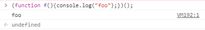
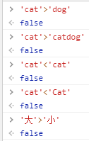

JavaScript¶
JavaScript简介¶
- 定位：嵌入式（embedded）语言，通用的浏览器脚本语言
- 性能强大，简单易学
-
存在一些坑点（！），但不影响其火爆程度
JavaScript小坑集合
switch语句后面的表达式，与case语句后面的表示式比较运行结果时，采用的是严格相等运算符（===），而不是相等运算符（==），这意味着比较时不会发生类型转换。怎么解释这个输出结果呢？
- 输出 "object"
这是JavaScript的历史原因造成的。JavaScript 语言第一版，只设计了五种数据类型（对象、整数、浮点数、字符串和布尔值），没考虑
null，只把它当作object的一种特殊值。后来null独立出来，作为一种单独的数据类型，为了兼容以前的代码，typeof null返回object就没法改变了- 在
if语句中，null和undefined都会自动转为false，相等运算符（==）会报告两者相等。 null是一个表示为“空”的对象，转为数值是0；undefined是一个表示"此处无定义"的原始值，转为数值时为NaN。null~ 此处不该有值 ；undefined~ 缺少值
浮点数不是精确的值，所以涉及小数的比较和运算要特别小心！
- 输出
0.3000000000000004 - 输出
1.499999999999998
由于历史原因，JavaScript只支持两字节的字符，不支持四字节的字符，这导致码点在U+10000到U+10FFFF之间的字符，JavaScript总是认为它们是两个字符（
length属性为2），实际应该是1 -
JavaScript标准：ECMA-262
所以，Java和JavaScript有什么关系？
JavaScript的基本语法和对象体系是模仿Java而设计的（它俩是完全不一样的语言！），但JavaScript语言的函数是一种独立的数据类型，采用了基于原型（prototype）对象的继承链。 Java需要编译，而JavaScript可以直接解释运行。
JavaScript的引用方式¶
<head></head>标签内<body></body>标签内
以上两种方法中，JavaScript代码均在<script></script>标签中
- 元素的事件属性（例如
onclick、onblur） - 外部脚本引入
JavaScript基本语法¶
理解JavaScript的编译过程
JavaScript是一种解释型语言，通过词法分析和语法分析得到语法树后，就可以开始解释执行。JavaScript引擎解析脚本时，会预声明变量（var → undefined），预定义函数
- 词法分析：字符流（char stream） → 记号流（token stream）
- 语法分析：构造语法树
语句和表达式¶
- 以行为执行单位
- 语句以分号(
;)结尾 -
变量
- JavaScript变量名区分大小写
-
JavaScript是动态类型语言
- 'number'
- 'string'
-
只声明变量而不赋值（此处针对
var而言）- undefined
-
ReferenceError:x is not defined
-
变量的作用域
-
JavaScript中，存在三种作用域
- 全局作用域：脚本模式运行所有代码的默认作用域
_ 局部作用域：函数体内部的作用域
_ 块作用域：仅对
let和const声明有效，用一对花括号（{}）创建的作用域
- 全局作用域：脚本模式运行所有代码的默认作用域
_ 局部作用域：函数体内部的作用域
_ 块作用域：仅对
var、let和const
-
标识符（identifier）
- 第一个字符可以为任意Unicode字母、美元符号（
$）和下划线（_）- 中文也可以做标识符
- 第二个字符往后，也可以用数字
-
保留字不可以做标识符
JavaScript保留字1
- 第一个字符可以为任意Unicode字母、美元符号（
-
注释
区块¶
- 使用大括号
{}将多个相关语句组合在一起，用于构成其他更复杂的语法结构 -
条件语句
- if-else结构
else总是与离自己最近的那个if语句配对
数据类型¶
可以使用typeof运算符获得除了 null 以外的任何原始类型（string、number、bigint、boolean、undefined、symbol）的值的类型
- 数值(Number)
- 包括整数和小数
- 大整数(bigint)
- 以
n结尾的任意精度的整数 - 字符串(string)
- 文本
- 布尔值(boolean)
- 只有
true和false两种值 - undefined
- 变量定义了，但是没有赋值；定义了函数，应该提供的参数没有传值进去，或者没有返回值； 对象的某属性没有赋值
- null
- 作为函数的参数，表示该函数的参数为空；作为对象原型链的终点
- symbol
- 创建唯一的标识符，每个从
Symbol()返回的 symbol 值都是唯一的 - object
- 各种值组成的集合，又可分为object（狭义）、array、function
返回布尔值
- 前置逻辑运算符：
! - 相等比较符：
!==,===,!=,== - 比较运算符：
>=,>,<=,<
数值¶
- 基于IEEE754标准的双精度64位浮点数
-
最大值和最小值
JavaScriptNumber.MAX_VALUE; Number.MIN_VALUE; /* ECMAScript 6 Standard */ Number.isSafeInteger(); // (1)! Number.MAX_SAFE_INTEGER; Number.MIN_SAFE_INTEGER;- 目前，绝对值小于2的53次方的整数都可以精确表示
-
表示法
- 十进制（没有前导0）、十六进制（前缀0x或0X）、八进制（前缀0o或0O或有前导0，且只用到0~7的数值）、二进制（前缀0b或0B）
-
特殊的值
- 正零和负零
- 唯一的区别是64位浮点数表示法的符号位不同
- 做分母时，一个返回
-Infinity，一个返回Infinity
- NaN：非数字
- 字符串转换为数值失败时，结果为NaN
- 数学运算发生错误时，结果为NaN
- 它仍然属于
Number类（typeof NaN输出“number”） - NaN不等于任何值，包括它本身
- 任何值（包括
NaN本身）与NaN比较，返回的都是false
- 任何值（包括
- Infinity：无穷值
Infinity大于一切数值，-Infinity小于一切数值，除了NaN以外Infinity与NaN之间比较总会返回false
- 正零和负零
-
parseInt(string[,radix=10])方法- 用途：将字符串转换为指定基数的十进制整数
- 从左向右，直到遇到不能转换为数字的字符，返回转好的部分，否则返回
NaN - 参数非字符串，先转为字符串再转换
- 类似的方法：
parseFloat(string)- 将它的字符串参数解析成为浮点数并返回。如果在解析过程中遇到了正负号(+或-)，数字(0-9)，小数点，或者科学记数法中的指数(e或E)以外的字符，则它会忽略该字符以及之后的所有字符，返回当前已经解析到的浮点数。同时参数字符串首位的空白符会被忽略
-
isNaN(value)方法- 用途：判断一个值是否为
NaN - 先将
value转换为Number，然后比较
- 用途：判断一个值是否为
-
isFinite(value)方法- 用途：判断某个值是否为有限的数值，除了
Infinity、-Infinity、NaN和undefined四个值以外，都会返回true- 参数会首先转换为数值
- 用途：判断某个值是否为有限的数值，除了
字符串¶
-
零个或多个排在一起的字符，放在单引号或双引号中
- 默认只能写成一行，必须分多行的话，用反斜杠（
\）续行。 - 可以用
+号连接多个单行字符串。
转义符：
\表示一些特殊字符，如
\0、\n、\r等 - 默认只能写成一行，必须分多行的话，用反斜杠（
-
字符串也可视为字符数组
- 下标访问法：
[]运算符返回某一位置的字符- 编号从0开始
- 下标不是数字，或超出字符串长度，则返回
undefined
string不可改变- 字符串内部的单个字符无法增删，作修改不生效，也不会报错（！）
- 字符串的长度（
length）属性不会被改变
- 下标访问法：
-
Unicode
- 每个字符在JavaScript内部都是以16位（即2个字节）的UTF-16格式储存。
-
可以在JavaScript程序中直接用来表示字符
- 也会输出字符
"a"
- 也会输出字符
-
Base64相关方法
btoa()：任意值转换为Base64编码atob()：Base64编码转换为原来的值
非ASCII字符（如中文）怎么base64？3
- 在中间插入一个转码环节（如
encodeURIComponent()），再使用这两个方法 - 或使用
TypedArray重写这两种方法
对象¶
-
是一组“键值对”（key-value）的集合，是一种无序的复合数据集合
- 键名和键值之间用冒号分隔
-
两个键值对之间用逗号分隔
- 最后一个属性后面可以不加逗号
-
整个对象用花括号括起来
-
对象的键名是字符串
- 在ES6标准下，Symbol值也可以用作键名（“加不加引号都可以”）
- 键名是数值，会被自动转为字符串
- 键名不符合标识名的要求，则必须加上引号
-
属性（Property）：对象的键名
- 对象的键值可以为任何数据类型
- 若键值为函数，通常把它称为“方法”，它可以像函数那样调用
- 如果属性的值还是对象，就可以形成链式引用
- 属性可以动态创建
- 读写属性：点运算符（
.）或方括号（[]）运算符 - 属性查看：
Object.keys()、Object.values() -
属性删除：
delete- 若删除成功，则返回
true - 删除一个不存在的属性，
delete不会报错，而且也会返回true！ - 无法删除继承属性
delete什么时候返回false？属性存在，且不可被删除
不可被删除？
Object.defineProperty(obj,prop,descriptor)会直接在一个对象上定义一个新属性，或者修改一个对象的现有属性，并返回这个对象。 在属性中设置configurable为false。 - 若删除成功，则返回
-
属性是否存在：
in运算符-
检查对象是否包含某个属性（检查的是键名，不是键值），如果包含就返回
true，否则返回false。它的左边是一个字符串，表示属性名，右边是一个对象是否为对象自身属性？
in无法判断对象的属性是本身的，还是继承而来的，请使用对象的hasOwnProperty()方法来判断
-
-
- 遍历的是对象所有可枚举的属性
- 它不仅遍历对象自身的属性，还遍历继承的属性（原型方法和属性）
- 适用遍历拥有迭代器对象（
iterator）的集合，而不是对象 - 遍历对象属性可以用
Object.keys()方法
-
对象的引用
- 不同的变量名指向同一个对象，那么它们都是这个对象的引用，也就是说，它们指向同一个内存地址
- 修改其中一个变量，会影响到其他所有变量
- 取消某一个变量对于原对象的引用，不会影响到另一个变量对原对象的引用
- 引用只局限于对象，如果两个变量指向同一个原始类型的值，变量这时都是值的拷贝
表达式还是语句？
经过前面的学习后，现在可以发现{foo:123}可能具有两种含义：
- 表达式：一个包含foo属性的对象
- 语句：一个代码区块，里面有一个标签foo，指向表达式123
到底是哪种呢？V8 引擎规定，如果行首是大括号，一律解释为对象。为了避免歧义，最好在大括号前加上圆括号，明确其为对象。
-
with语句：绑定对象with语句已经被废弃，不建议使用-
foo="bar"等价于object.foo="bar" -
如果
with区块内部有变量的赋值操作，必须是当前对象已经存在的属性，否则会创造一个当前作用域的全局变量- 所以，应该先定义对象的属性，然后在
with区块内操作它
- 所以，应该先定义对象的属性，然后在
-
函数¶
-
声明函数：
function命令-
function命令后面是函数名，函数名后面是一对圆括号，里面是传入函数的参数，函数体放在大括号里面- 函数体
-
-
函数表达式：
var var_name = function [fun_name](arguments){};- 不加
fun_name，函数为匿名函数 - 加上
fun_name，函数名仅在函数体内部有效 - 末尾分号可有可无
- 不加
Function构造函数- 可以传递任意数量的参数给
Function构造函数，只有最后一个参数会被当做函数体。 - 如果只有一个参数，该参数就是函数体。
- 可以不使用
new命令，返回结果完全相同。
- 可以传递任意数量的参数给
- 函数名提升
- 采用
function命令声明函数时，整个函数会像变量声明一样，被提升到代码头部 - 重复声明函数，前一次的声明会无效。
- 如果同时采用
function命令和赋值语句声明同一个函数，最后总是采用赋值语句的定义
- 采用
- 调用函数：圆括号运算符
()- 圆括号之间是函数参数
- 内部的
return语句表示函数返回，非必需 - 可以调用自身，此时称为递归（recursion）
- 常见属性
name：函数的名字- 通过变量复制定义的函数，如果：
- 变量的值是一个匿名函数，那么
name属性返回变量名 - 变量的值是一个具名函数，那么
name属性返回函数表达式的名字
- 变量的值是一个匿名函数，那么
- 通过变量复制定义的函数，如果：
length：参数个数的多少
- 常见方法
toString()方法：函数的源码，包含注释
- 作用域
- 函数外部声明的变量就是全局变量（global variable），它可以在函数内部读取
- 在函数内部定义的变量，外部无法读取，称为“局部变量”（local variable）
- 函数内部定义的变量，会在该作用域内覆盖同名全局变量
- 变量提升：在函数内，
var命令声明的变量，不管在什么位置，变量声明都会被提升到函数体的头部
-
参数
- 如果有同名的参数，则取最后出现的那个值，即使后面的没有值或被省略，也是以其为准
- 省略参数值：
undefined - 传递方式
- 参数为原始类型：按值传递
- 在函数体内修改参数值，不会影响到原始值
- 参数为复合类型：按址传递
- 在函数体内修改参数值，会影响到原始值
- 参数为原始类型：按值传递
arguments对象- 只能在函数体内使用，包含了函数运行时的所有参数
arguments.length：函数调用时传入了多少个参数- 正常模式下可修改，严格模式 下修改无效，但不报错
-
闭包（Closures）2
- 嵌套的内部函数引用了嵌套的外部函数的数据（变量或函数），就产生了闭包
- 闭包存在于嵌套的内部函数中
- 在嵌套函数定义执行结束后产生，嵌套函数成为垃圾对象时死亡
- 共享相同的函数定义，但保存了不同的词法环境
- 这个环境包含了这个闭包创建时所能访问的所有局部变量
- 每当 JavaScript 执行一个函数时，都会创建一个作用域对象（scope object），用来保存在这个函数中创建的局部变量 ，它和被传入函数的变量一起被初始化
-
闭包 = 函数 + 被创建函数的作用域对象
-
原理
-
外部函数的局部变量若会被闭包函数调用，就不会在外部函数执行完毕之后立即被回收，如下述例子的变量
i。JavaScriptfunction A() { var i = 2; return function() { console.log('i = '+i); } } var a = A(); a(); // (1)!- 输出
i = 2
解释
调用
A的时候就创建了一个作用域对象，我们姑且称之为Aa，那么这个Aa应该是Aa = { i: 2 };。在A函数返回一个函数之后，A执行完毕。Aa对象本应该被回收，但是由于返回的函数使用了Aa的属性i，所以返回的函数保存了一个指向Aa的引用，所以Aa不会被回收。 - 输出
-
每调用一次外部函数就产生一个新的闭包，以前的闭包依旧存在且互不影响。
-
同一个闭包会保留上一次的状态，当它被再次调用时会在上一次的基础上进行。
JavaScriptfunction A() { var num = 42; return function() { console.log(num++); } } var a = A(); a(); // (1)! a(); // (2)! var b = A(); // (3)! b(); // (4)!- 42
- 43
- 重新调用
A()，形成新闭包 - 42
解释
- 当我们连续调用两次
a();，num会在原基础上自加。说明同一个闭包会保留上一次的状态，当它被再次调用时会在上一次的基础上进行。 - 我们的
b();的结果为42，说明它是一个新的闭包，并且不受其他闭包的影响。
-
在外部函数中存在的多个函数“同生共死”
-
fun1fun2fun3被同时声明并且都可以对作用域对象的属性（局部变量）进行访问与操作。JavaScriptvar fun1, fun2, fun3; function A() { var num = 42; fun1 = function() { console.log(num); } fun2 = function() { num++; } fun3 = function() { num--; } } A(); fun1(); // (1)! fun2(); fun2(); fun1(); // (2)! fun3(); fun1(); // (3)! var old = fun1; A(); fun1(); // (4)! old(); // (5)!- 42
- 44
- 43
- 42
- 43，上一个闭包的
fun1()
-
当闭包遇见循环变量
看这个例子：
JavaScriptfunction buildArr(arr) { var result = []; for (var i = 0; i < arr.length; i++) { var item = 'item' + i; result.push( function() {console.log(item + ' ' + arr[i])} ); } return result; } var fnlist = buildArr([1,2,3]); fnlist[0](); // item2 undefined fnlist[1](); // item2 undefined fnlist[2](); // item2 undefined这个例子中的作用域对象为
当循环全部结束的时候作用域对象中的属性
i正好是i++之后的3，而arr[3]是没有值的，所以为undefined。但是在最后一次循环，也就是i = 2的时候，item的值为item2，当 i++，i = 3循环条件不满足循环结束，此时的item的值已经被保存下来了，所以此时的arr[i]为arr[3]，而item为item2。怎么输出item0 1 item1 2 item2 3呢？要点是存储i的每一个状态！JavaScriptfunction buildArr(arr) { var result = []; for (var i = 0; i < arr.length; i++) { result.push( (function(n) { return function() { var item = 'item' + n; console.log(item + ' ' + arr[n]); } })(i)); } return result; } var fnlist = buildArr([1,2,3]); fnlist[0](); // item0 1 fnlist[1](); // item1 2 fnlist[2](); // item2 3或者使用
let关键字声明循环变量 -
-
典型应用场景
-
循环遍历添加监听函数
-
自定义JS模块
- 所有数据和功能封装在函数内部
- 向外暴露一个包含若干方法的对象或函数
JavaScriptfunction myModule(){ var d = /* some private data */ function A(){} function B(){} // other function return { A : A, B : B, // other function } } // 或 (function (){ var d = /* some private data */ function A(){} function B(){} // other function window.myModule = { A : A, B : B, // other function } })()
-
-
- 嵌套的内部函数引用了嵌套的外部函数的数据（变量或函数），就产生了闭包
-
立即调用的函数表达式（IIFE）
-
不可以直接在定义末尾加入圆括号
()来调用，会报错。
报错如图所示 - 产生报错，与 JavaScript 的解析方式相关。JavaScript 引擎规定，如果
function关键字出现在行首，一律解释成语句，此时这一段都是函数的定义，不应该以圆括号结尾，于是报错 -
不要让
function出现在行首，让引擎将其理解成一个表达式 -
综上：让解释器以表达式来处理函数定义
- 产生报错，与 JavaScript 的解析方式相关。JavaScript 引擎规定，如果
IIFE表达式
- 只要行首不为
function关键字，令引擎理解为一个表达式，就可以正常使用()来立即调用(function(){/*code*/}());(function(){/*code*/})();
- 推而广之，任何让解释器以表达式来处理函数定义的方法，都能产生立即调用的效果
var i = function(){return 114514;}();true && function(){/*code*/}();0, function(){/*code*/}();!function(){/*code*/}();此处可以将!换为~-+
-
{kind=link}
数组¶
数组（array）是按次序排列的一组值。每个值的位置都有编号（从0开始），整个数组用方括号([])表示。
array相关的小说明
- 任何类型的数据，都可以放入数组（数值、对象、数组、函数）
- 如果数组的元素还是数组，就形成了多维数组
- 数组支持定义时和定义后赋值
array：特殊的object
数组的特殊性体现在它的键名是按次序排列的一组整数，本质还是字符串，但是在读取时非字符串键名会被转换为字符串
-
数组的属性
length：数组长度（数组成员数量）- 数组的数字键不需要连续
- 可以通过修改
length属性值随时增减数组的成员- 可以通过修改
length属性值为0来删除所有的数组成员 - 当
length属性设为大于当前数组长度时，读取新增的位置都会返回undefined - JavaScript 使用32位整数来保存数组元素个数，
length的最大值也就是4294967295（=232 - 1） - 只要不为空数组添加整数键，数组的
length值保持为零
- 可以通过修改
-
in运算符：检查某个键名是否存在- 如果数组的某个位置是空位，
in运算符返回false
- 如果数组的某个位置是空位，
-
数组遍历
- 不仅会遍历数组所有数字键，还会遍历非数字键，不推荐使用它遍历数组
- 也可遍历对象
-
为数组中的每一个有效元素执行一次
callback函数。遍历数组让数组中的每一个元素做一件事情。那些已经被删除（使用delete方法等情况）或者未初始化的项将被跳过（但不包含那些值为undefined的项目）。JavaScriptvar arr = []; arr[0] = "a"; arr[3] = "b"; arr[10] = "c"; arr["name"] = "Hello world"; arr.forEach((data, index, array) => { console.log(data, index, array); }); /* output: a 0 ["a", 3: "b", 10: "c", name: "Hello world"] b 3 ["a", 3: "b", 10: "c", name: "Hello world"] c 10 ["a", 3: "b", 10: "c", name: "Hello world"] */
-
数组的空位
- 当数组的某个位置是空元素，即两个逗号之间没有任何值，我们称该数组存在空位（slot）
- 数组的空位不影响
length属性 - 如果最后一个元素后面有逗号，不会产生空位
- 数组的空位不影响
- 删除（
delete）某个数组元素，会留下一个空位，且不影响length属性 - 读取空位的值会返回
undefined- 但是某个位置有无元素与该位置是不是
undefined无关！
- 但是某个位置有无元素与该位置是不是
- 当数组的某个位置是空元素，即两个逗号之间没有任何值，我们称该数组存在空位（slot）
运算符¶
-
算术运算符
JavaScript提供了10个运算符，用来完成各种运算：加（
+）、减（-）、乘（*）、除（/）、指数（**）、余数（%）、自增（++）、自减（--）、数值（+）、负数值（-）-
加法运算符
-
基本规则：操作数没有字符串，则非数值类型转为数值计算。操作数有字符串，则加法运算符变为连接运算符，任何非字符串操作数转为字符串类型
-
加法运算符存在重载现象，在运行时决定，到底是执行相加还是执行连接
这种机制仅加法具有
object相加：转为原子类型的值(.valueOf().toString())，然后再相加
-
-
余数运算符
- 余数运算符（
%）返回前一个运算子被后一个运算子除所得的余数 - 运算结果的正负由第一个运算子的正负号决定
- 余数运算符（
-
自增和自减运算符
- 将运算子首先转为数值，然后加上1或者减去1，它们会修改原始变量
-
数值和负数值运算符
- 将任何值转为数值（与
Number函数的作用相同），会返回一个新的值，而不会改变原始变量的值
- 将任何值转为数值（与
-
指数运算符
- 前一个运算子是底数，后一个运算子是指数
- 此运算是右结合的
-
-
赋值运算符：算术运算符 + ‘=’
- 将右侧运算结果赋值给左侧变量
-
比较运算符
比较两个值的大小，然后返回一个布尔值，表示是否满足指定的条件
JavaScript提供了8个比较运算符，分为相等比较和非相等比较：大于（
>）、小于（<）、小于或等于（<=）、大于或等于（>=）、相等（==）、严格相等（===）、不相等（!=）、严格不相等（!==）涉及到四种运算符：
=====!==!=-
比较相同类型的数据时，与严格相等运算符完全一样
-
比较不同类型的数据时，先将数据进行类型转换，然后再用严格相等运算符比较
- 原始类型的值会转换成数值再进行比较
- 对象与原始类型的值比较时，对象转换成原始类型的值，再进行比较
undefined和null与其他类型的值比较时，结果都为false，它们互相比较时结果为true
-
原始类型比较：值相等返回
true，否则返回false -
复合类型比较（
array、function、object）：不是比较它们的值是否相等，而是比较它们是否指向同一个地址{}==={}[]===[](function(){}===function(){})的结果均为false，因为它们存放在不同的内存地址上- 两个变量引用一个对象，则它们相等
先求相等运算符的结果，然后返回相反值
先求严格相等运算符的结果，然后返回相反值
- 相等运算符（
==）比较两个值是否相等，严格相等运算符（===）比较它们是否为“同一个值” - 如果两个值不是同一类型，严格相等运算符（
===）直接返回false，而相等运算符（==）会将它们转换成同一个类型，再用严格相等运算符进行比较
- 都是字符串，字典序比较
- 实际上比较的是Unicode码点大小
 一些比较结果，其中“大”的 Unicode 码点是22823，“小”是23567
- 实际上比较的是Unicode码点大小
- 否则，均转换为数值，比较数值大小
- 对象转为原始类型的值，再比较：先调用
valueOf方法；如果返回的还是对象，再接着调用toString方法
- 对象转为原始类型的值，再比较：先调用
-
-
布尔运算符
- 用于将表达式转为布尔值
-
包含四个运算符：取反（
!）、且（&&）、或（||）、三元（?:）用于将布尔值变为相反值，对于非布尔值，取反会将其转为布尔值
- 如果第一个运算子的布尔值为
true，则返回第二个运算子的值（注意是值，不是布尔值） - 如果第一个运算子的布尔值为
false，则直接返回第一个运算子的值，且不再对第二个运算子求值（“短路”） - 多个连用的且运算符，返回第一个布尔值为
false的表达式的值。如果所有表达式的布尔值都为true，返回最后一个表达式的值
- 如果第一个运算子的布尔值为
true，则返回第一个运算子的值，且不再对第二个运算子求值（“短路”） - 如果第一个运算子的布尔值为
false，则返回第二个运算子的值
三元条件运算符由问号（?）和冒号（:）组成，分隔三个表达式，如果第一个表达式的布尔值为
true，则返回第二个表达式的值，否则返回第三个表达式的值 - 如果第一个运算子的布尔值为
-
二进制位运算符
- 用于直接对二进制位进行计算，只对整数起作用，其他类型会被转为整数后再执行位运算
- 一共7个运算符：或（
|）、与（&）、否（~）、异或（^）、左移（<<）、右移（>>）、带符号位的右移（>>>）
{kind=link}
{kind=link}
{kind=link}
{kind=link}
{kind=link}
类型转换¶
- 使用
Number() - 参数为原始类型
- 数值：不变
- 字符串：逐位解析，只要不能解析为数值，就返回
NaN- 空字符串被转为0
- 布尔值：
true→ 1false→ 0 undefined→NaNnull→ 0
- 参数是对象
- 除非为只有一个数值的数组，否则返回
NaN
- 除非为只有一个数值的数组，否则返回
- 使用
String() - 参数为原始类型
- 数值：转为相应的字符串
- 字符串：不变
- 布尔值：
true转为字符串"true"，false转为字符串"false" undefined：转为字符串"undefined"null：转为字符串"null"
- 参数是对象
- 狭义对象：返回一个类型字符串
- 函数：返回函数的
toString值 - 数组：返回该数组的字符串形式
- 使用
Boolean() - 除了
undefinednullNaN-0+0''的转换结果为false，其他的值全部为true
- JavaScript预期某位置应该是布尔值时，该位置的值会被类型转换（自动调用
Boolean()函数）- 除了以下几个值被转换为
false，其他值都是trueundefinednullfalse- 0（包括+0和-0）
NaN- 空字符串
- 空数组（
[]）和空对象（{}）对应的布尔值都是true
- 除了以下几个值被转换为
- JavaScript 遇到预期为字符串的地方，就会将非字符串的值自动转为字符串，主要发生在字符串的加法运算时
- 先将复合类型的值转为原始类型的值，再将原始类型的值转为字符串
- JavaScript 遇到预期为数值的地方，会将参数值自动转换为数值，系统内部会自动调用
Number()函数
错误处理机制¶
- JavaScript 解析或运行时，一旦发生错误，引擎就会抛出一个错误对象
- JavaScript 原生提供
Error构造函数，所有抛出的错误都是这个构造函数的实例new Error([message[, fileName[,lineNumber]]])
- JavaScript 原生提供
-
try-throw-catch-finally- 尝试执行的代码块
- 捕获错误的代码块
- 无论
try/catch结果如何都会执行的代码块
JavaScriptfunction f(){ try{ console.log(0); throw('bug'); }catch(e){ console.log(1); return true; // (1)! console.log(2); // (2)! }finally{ console.log(3); return false; // (3)! console.log(4); // (4)! } console.log(5); // (5)! } var result = f(); // (6)! result // (7)!- 原本会延迟到
finally代码块结束再执行 - 不会执行
- 覆盖了上面的
return - 不会执行
- 不会执行
- 输出
0 1 3 - 输出
false
JavaScript标准库¶
标准内置对象¶
- 值属性：
Infinity、NaN、undefined、null -
函数属性
-
全局函数可以直接调用，不需要在调用时指定所属对象，执行结束后会将结果直接返回给调用
- 在当前作用域中，注入代码
- 参数为字符串
- 非字符串则原样返回
- 对参数尝试调用JS解释器进行求值
- 参数会作为语句执行，小心使用！
- 判断被传入的参数值是否为一个有限数值
- 在必要情况下，参数会首先转为一个数值
在
Number对象上的Number.isFinite()方法，不会转换参数为数值- 判断一个值是否为
NaN - 在必要情况下，参数会首先转为一个数值
- 因为
NaN不能通过相等操作符来判断，所以这个函数是有必要的 - 算术运算返回一个未定义或无法表示的值，或不能强制转化为数值的非数值转化为数值时，会得到
NaN
在
Number对象上的Number.isNaN()方法，不会转换参数为数值- 解析一个字符串
string并返回指定基数的十进制整数，radix是2-36之间的整数，表示被解析字符串的基数。 - 当
radix不符合范围要求，或第一个非空格字符不能转换为数字时，返回NaN radix的默认值不一定是10，需要看字符串结构而定
- 解析一个字符串参数并返回一个浮点数
使用URI编解码函数的必要性
URI 由组件分隔符分割的组件序列组成，一般形式如
- scheme 表示协议，比如http，ftp
- authority 用
://来和scheme 分割，常见的authority格式如下：<userinfo>@<host>:<port> - path在 scheme 和 authority 确定下来的情况下标识资源，path由几个段组成，每个段用
/来分隔；query 查询串，用?和path分隔
如果这些分隔符出现在某个组件内，就会破坏组件原本的含义，所以要转义。
RFC2396规定，path的保留字符集为"/" | "?" | ";" | "="，query的保留字符集为";" | "/" | "?" | ":" | "@" | "&" | "=" | "+" | "," | "$“
- ASCII码0-31，127-255会被转义；有一部分不安全的符号也会被转义
encodeURI()decodeURI();/?:@&=+$,#- _ . ! ~ * ' ( )不会被转义- 操作的是完整的 URI，这两个函数假定 URI 中的任何保留字符都有特殊意义，所以不会编码它们
encodeURIComponent()decodeURIComponent()- 转义除了字母、数字、
- _ . ! ~ * ' ( )外的所有所有字符 - 操作的是组成 URI 的组件，这两个函数假定任何保留字符都代表普通文本，所以必须编码它们
- 转义除了字母、数字、
-
-
基本对象：定义或使用其他对象的基础。基本对象包括一般对象、函数对象和错误对象
Object、Function、Boolean、Symbol、Error、EvalError、InternalError、RangeError、ReferenceError、SyntaxError、TypeError、URIError
-
数字和日期对象：用来表示数字、日期和执行数学计算的对象
- 经过封装，可以处理数字值的对象
- JavaScript 的
Number类型为双精度IEEE754 64位浮点类型，能够准确表示的整数范围在-2^53~2^53之间。 - 静态属性：
Number.MAX_VALUE、Number.MIN_VALUE、Number.NaN等 - 静态方法
- 是否为
NaN：Number.isNaN() - 是否为有限数：
Number.isFinite() - 是否类型为
Number且为整数：Number.isInteger() - 是否为安全表示的整数：
Number.isSafeInteger() - 数字转换：
Number.parse[Float|Int]()
- 是否为
- 表示任意大的整数，其值可以大于 JavaScript 中可以用
Number表示的最大整数 - 使用整数字面量后面加
n，或者使用BigInt()函数来定义一个BigInt值 BigInt变量转换为Number变量可能会丢失精度BigInt变量不能与Number变量进行运算，也不能与Number变量进行比较- 其
typeof测试返回"bigint"
- 提供各种数学功能
- 不可被实例化，所有的属性和方法都必须在
Math对象上调用 - 静态属性：
Math.EMath.PIMath.SQRT2等 - 静态方法
Math.random()：返回[0,1)之间的伪随机数 !!! tip "任意范围的随机数生成"- 三角函数
- 最大值、最小值
- 取整
- 向下取整：
Math.floor() - 向上取整：
Math.ceil()
- 向下取整：
- 指对运算：
Math.pow()Math.log() - 绝对值：
Math.abs() - 四舍五入：
Math.round() - 平方根：
Math.sqrt()
- 它以1970 年1 月1 日00:00:00 作为时间的零点，可以表示的时间范围是前后各1亿天，单位为毫秒
- 直接调用
Date()：返回代表当前时间的字符串 new Date()：也是当前时间- 可以传参数（毫秒数、字符串、多个整数……），返回对应的时间实例
- 运算
- 类型自动转换时，
Date实例如果转为数值，则等于对应的毫秒数；如果转为字符串，则等于对应的日期字符串- 日期相加（+）相当于字符串连接，相减（-）相当于数值运算
- 类型自动转换时，
- 静态方法
Date.now()：返回当前时间距离时间零点（1970 年1 月1 日00:00:00 UTC ）的毫秒数Date.parse()：解析日期字符串，返回该时间距离时间零点（1970 年1 月1 日 00:00:00 ）的毫秒数- parse失败会返回
NaN
- parse失败会返回
Date.UTC()：接受年（必需）、月（必需）、日等变量作为参数，返回该时间距离时间零点（1970 年1 月1 日 00:00:00 UTC ）的毫秒数
- 类方法
- 转字符串类：
toString()、toUTCString()、toLocaleString()、toDateString()方法 - getter方法：
getFullYear()、getMonth()、getDate()、getHours()、getMinutes()、getSeconds()等- getDay返回0代表星期日，1代表星期一
- 注意getMonth，返回0代表1月，11代表12月
- setter方法：
setFullYear(year[,month,date])、setMonth()、setDate(date)、setHours(hour[,min,sec,ms])、setMinutes(min[,sec,ms])、setSeconds(sec[,ms])等
- 转字符串类：
-
字符串对象：用来表示和操作字符串的对象
-
String的实例方法- 使用：
str.match(dest) - 确定原字符串是否匹配某个子字符串，返回一个数组，成员为匹配的第一个字符串。如果没有找到匹配，则返回
null- 返回的数组有
index和input属性，分别表示匹配字符串开始的位置和原始字符串
- 返回的数组有
- 可以使用正则表达式作为参数
- 使用：
str.search(dest) - 返回值为匹配的第一个位置，如果没有找到匹配，则返回
-1
- 使用：
str.replace(src,dest) - 用于替换匹配的子字符串，一般情况下只替换第一个匹配（除非使用带有
g修饰符的正则表达式）
- 使用：
str.charAt(index) - 返回指定位置的字符，参数是从0开始编号的位置
- 如果参数为负数，或大于等于字符串的长度，返回空字符串
- 使用：
str.concat(str1[,str2,...]) - 用于连接两个字符串，返回一个新字符串，不改变原字符串
- 如果参数不是字符串，
concat方法会将其先转为字符串，然后再连接
- 使用：
str.slice(start[,stop]) - 从原字符串取出子字符串并返回，不改变原字符串
- 如果省略第二个参数，表示子字符串一直到字符串结束
- 如果参数是负值，表示从结尾开始倒数计算的位置，即该负值加上字符串长度
- 如果第一个参数大于第二个参数，返回一个空字符串
- 使用：
str.indexOf(Charsequnce) - 从头部开始确定一个字符串在另一个字符串中第一次出现的位置，返回结果是匹配开始的位置。如果返回-1，就表示不匹配
lastIndexOf()：从尾部开始匹配
- 使用：
str.trim() - 去除字符串两端的空字符（空格+制表符、换行符、回车符），返回一个新字符串，不改变原字符串
- 转换为小写
toLowerCase() - 转换为大写
toUpperCase()
- 使用：
str.split(delimiter[,maxMemberCount]) - 按照给定规则分割字符串，返回一个由分割出来的子字符串组成的数组
- 如果分割规则为空字符串，则返回数组的成员是原字符串的每一个字符
- 如果省略参数，则返回数组的唯一成员就是原字符串
- 如果满足分割规则的两个部分紧邻着或位于开头结尾，则返回数组之中会有一个空字符串
- 可以接受第二个参数，限定返回数组的最大成员数
- 使用：
str1.localCompare(str2) - 在考虑自然语言顺序的情况下，用于比较两个字符串，返回一个整数，如果小于0，表示第一个字符串小于第二个字符串；如果等于0，表示两者相等；如果大于0，表示第一个字符串大于第二个字符串
- 使用：
-
RegExp：将文本与一个模式匹配，正则表达式
-
-
可索引的集合对象：这些对象表示按照索引值来排序的数据集合，包括数组和类型数组，以及类数组结构的对象
- Array、Int8Array、Uint8Array、UintClampedArray、Int16Array、Uint16Array、Int32Array、Uint32Array、Float32Array、Float64Array
-
Array类介绍
- Array 构造函数输入不同的参数 ，行为不一致
- 无参数返回空数组
- 单个正整数参数作为数组长度
- 单个非数值，此参数将作为数组的成员
- 多参数，所有参数都将作为数组的成员
- 判断数组：
Array.isArray() -
实例方法
-
push()和pop()push方法用于在数组的末端添加一个或多个元素，并返回添加新元素后的数组长度pop方法用于删除数组的最后一个元素，并返回该元素。对空数组使用pop方法，不会报错，而是返回undefined- 这两种方法均改变原数组
-
shift()和unshift()shift()方法用于删除数组的第一个元素，并返回该元素unshift()方法用于在数组的第一个位置添加元素，并返回添加新元素后的数组长度
-
join(delimiter=",")- 以指定参数作为分隔符（默认为逗号），将所有数组成员连接为一个字符串返回
- 如果数组成员是
undefined或null或空位，会被转成空字符串
-
concat()- 用于合并数组
- 接收数组或非数组作为参数，新成员添加到原数组成员的后部，原数组不变
-
reverse()- 颠倒排列数组元素，返回改变后的数组
- 原数组被改变
-
slice([start[,end]])- 提取目标数组的一部分，返回一个新数组（包含start，不包含end），原数组不变
- 如果省略所有参数，返回原数组的拷贝
- 如果省略第二个参数，则一直返回到原数组的最后一个成员
- 如果slice 方法的参数是负数，则表示倒数的位置
- 如果第一个参数大于等于数组长度，或者第二个参数小于第一个参数，则返回空数组
- 提取目标数组的一部分，返回一个新数组（包含start，不包含end），原数组不变
-
splice(start, count, addElement1, addElement2, ...)- 删除原数组的一部分成员，并可以在删除的位置添加新的数组成员，返回值是被删除的元素
- 会改变原数组！
- 第一个参数是删除的起始位置（从0 开始），第二个参数是被删除的元素个数。如果后面还有更多的参数，则表示这些就是要被插入数组的新元素
- 起始位置是负数表示从倒数位置开始删除
- 第二个参数设为0表示单纯地插入元素
- 只提供第一个参数表示删除到结尾
- 删除原数组的一部分成员，并可以在删除的位置添加新的数组成员，返回值是被删除的元素
-
排序：
sort([function_sortby])- 对数组成员进行排序，默认是按照字典顺序排序。
- 自定义排序：传入一个函数作为参数
sort的参数函数本身接受两个参数，表示进行比较的两个数组成员- 如果返回值大于0，表示第一个成员排在第二个成员后面，否则第一个成员排在第二个成员前面
- 自定义排序：传入一个函数作为参数
- 排序后，原数组改变
- 数值会被先转成字符串，再按照字典顺序进行比较
- 对数组成员进行排序，默认是按照字典顺序排序。
-
map(function(currentValue[,index,arr])[, thisValue])- 将数组的所有成员依次传入参数函数，然后把每一次的执行结果组成一个新数组返回，原数组没有变化
- 函数调用时，
map方法向它传入三个参数：当前成员、当前位置和数组本身 - 可选的thisValue参数用于绑定回调函数内部的this变量，指向外部的某一数组
- 如果数组有空位，
map方法的回调函数在这个位置不会执行，会跳过数组的空位，但不会跳过undefined和null
- 函数调用时，
- 将数组的所有成员依次传入参数函数，然后把每一次的执行结果组成一个新数组返回，原数组没有变化
-
forEach(function(currentValue,index,arr))- 也是对数组的所有成员依次执行参数，只不过不返回值
forEach方法也会跳过数组的空位，但不会跳过undefined和null
-
过滤：
filter(function(currentValue,index,arr))- 用于过滤数组成员，满足条件的成员组成一个新数组返回，原数组没有变化
- 所有数组成员依次执行参数所指向的函数，返回结果为true 的成员组成一个新数组返回
- 用于过滤数组成员，满足条件的成员组成一个新数组返回，原数组没有变化
-
断言：
some()和every()- 接受一个函数作为参数，所有数组成员依次执行该函数，该函数有三个参数：当前成员、当前位置和整个数组，然后返回一个布尔值
- 所有成员都符合function条件，则
every()返回true - 任意成员符合function条件，则
some()返回true
- 所有成员都符合function条件，则
- 接受一个函数作为参数，所有数组成员依次执行该函数，该函数有三个参数：当前成员、当前位置和整个数组，然后返回一个布尔值
-
reduce()和reduceRight()- 参数：
function(total, currentValue[, currentIndex, arr])[, initialValue]- 第一个参数都是一个函数。该函数接受以下四个参数：
- 累积变量，默认为数组的第一个成员
- 当前变量，默认为数组的第二个成员
- 当前位置（从0开始）
- 原数组
- 第一个参数都是一个函数。该函数接受以下四个参数：
- 依次处理数组中的每一个成员，最终累计为一个值
- 参数：
-
indexOf()和lastIndexOf()indexOf方法返回给定元素在数组中第一次出现的位置，如果没有出现则返回-1lastIndexOf方法返回给定元素在数组中最后一次出现的位置，如果没有出现则返回-1- 这两个方法都可以接受第二个参数，表示搜索的开始位置
- 这两个方法内部，使用严格相等运算符（
===）进行
-
- Array 构造函数输入不同的参数 ，行为不一致
-
使用键的集合对象：这些集合对象在存储数据时会使用到键，支持按照插入顺序来迭代元素
- Map、Set、WeakMap、WeakSet
-
结构化数据：这些对象用来表示和操作结构化的缓冲区数据，或使用 JSON（JavaScript Object Notation）编码的数据
- ArrayBuffer、SharedArrayBuffer、Atomics、DataView、JSON
-
本部分参考https://www.cnblogs.com/wind-lanyan/p/6080160.html 和课件pdf共同整理 ↩